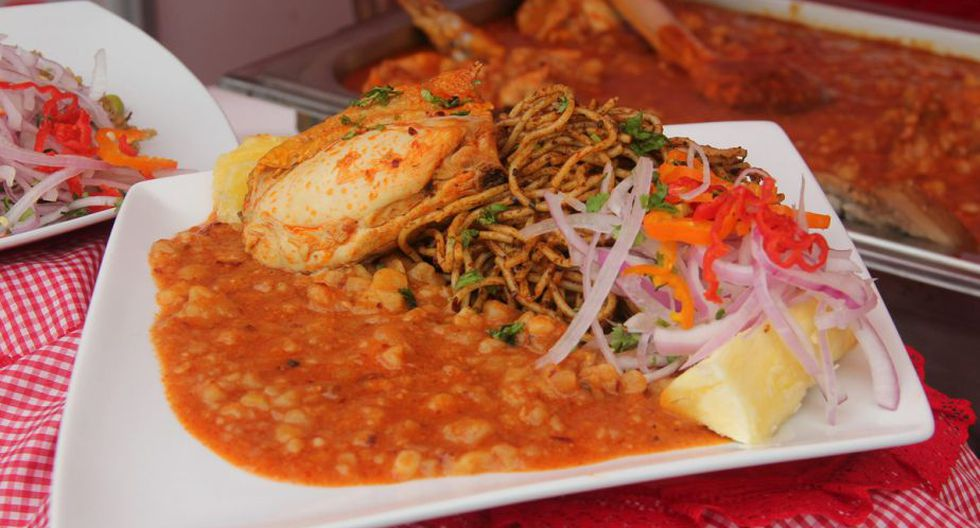
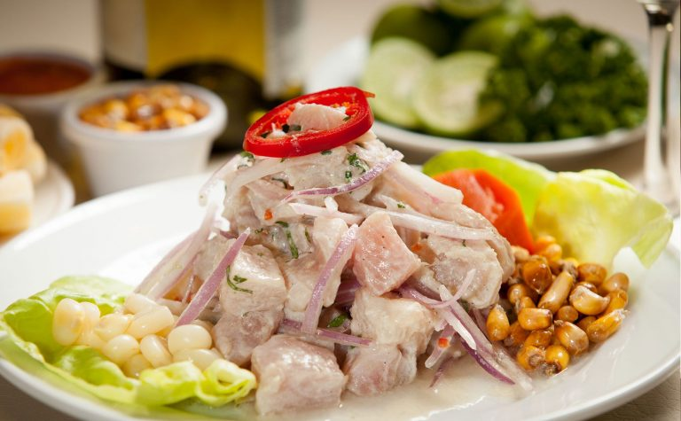
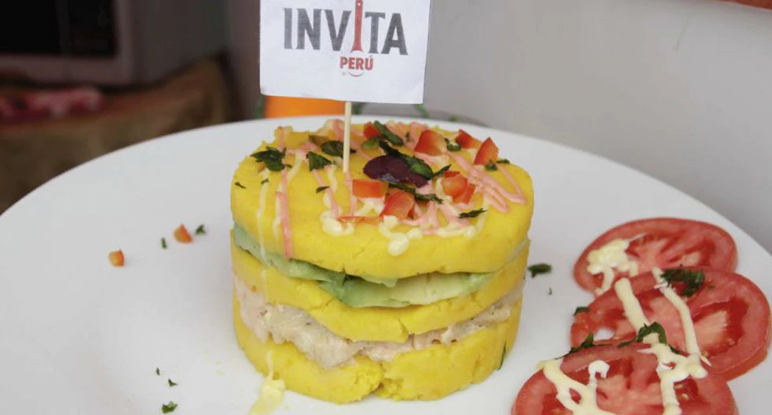
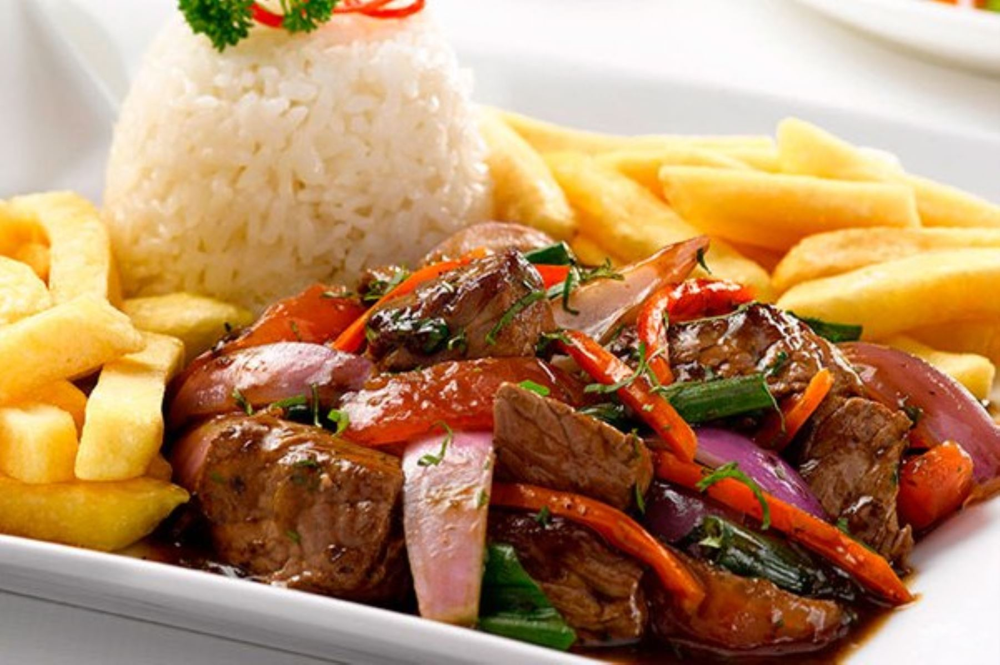
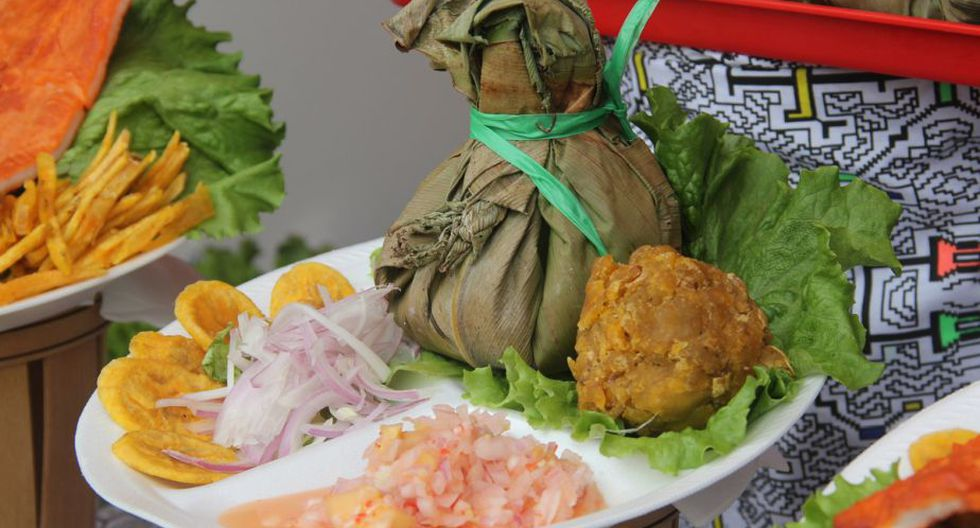
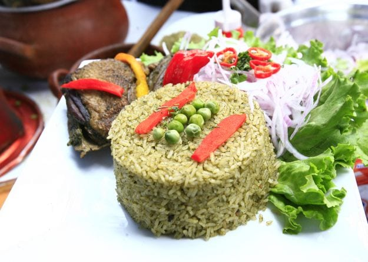

Los más pedidos
-

Carapulcra con Sopa Seca
El Refugio de Mamainé
Este plato tan típico de Perú es una mezcla de varias gastronomías internacionales, tales como la española, la italiana y la china. Es símbolo de representación y festejo. Así, este plato es un símbolo de celebración y festejo para el que se utiliza gallina, fideos tipo tallarín, cebolla picada, comino, achiote molido, tomate picado sin piel, albahaca, perejil y aceite de oliva. Para hacer la carapulcra chinchana, es necesario chancho, papa tomasa, ají panca molido, maní recién tostado y yuca sancochada.
$24,99
-

Ceviche
La casa del ceviche
Los ingredientes básicos de cualquier cebiche clásico peruano son trozos de pescado, cebolla y jugo de limón, que debe ser exclusivamente limón piurano, del valle del Chira Sullana, es por eso que se dice que el origen del cebiche es de la región Piura, en especial del puerto de Paita. En el Perú, se llama «limón» al fruto pequeño, verde y muy ácido de la especie Citrus × aurantifolia (llamada «lima agria» en otros países). Se pueden añadir otros ingredientes como cebolla roja en juliana, cilantro, maíz y apio. De preferencia, el pescado no debe haber sido atrapado con redes, sino con anzuelo, para no lastimar demasiado la carne.
$17,99
-

Causa rellena
Mi Barrunto
Este plato es tradicionalmente elaborado sobre la base de papa amarilla, limón, ají amarillo, huevo cocido y aceitunas negras,8 ingredientes a los que luego se les añadió el aguacate para el relleno y la lechuga para la decoración. Esta preparación admite diversas variantes, como causa rellena de atún, de trucha, de pollo, de mariscos u otras variedades de carnes blancas. Se sirve con un ligero baño de mayonesa. Además de papa amarilla, la masa de la causa puede ser elaborada con pallares verdes o yuca amarilla.
$14,99
-

Lomo Saltado
Tanta
La palabra saltado hace referencia a salteado (salteado en otros países de habla hispana, del francés sautée, que significa "saltar"), una técnica de cocina china ampliamente reconocida. Por lo tanto, los platos "saltados" son comúnmente conocidos en Perú por tener una influencia de la cocina china. Se prepara con carne de res, cebolla morada, ají amarillo, vinagre tinto o blanco, tomate y condimentos. A veces sillao y un chorrito de pisco. Originalmente las papas que acompañaban el plato eran cocidas y no fritas.
$24,99
-

Juane
Restaurante El Avispa Juane
El juane se elabora a base de arroz, piezas de gallina, aceituna botija, huevo cocido; todo ello se envuelve en hoja de bijao y posteriormente se pone a hervir. En vez de arroz se utiliza también la yuca, la chonta, la mezcla de arroz y yuca, frijoles, entre otros productos. Antes de envolverse en las hojas, se baña el preparado con una mezcla de huevos batidos para poder conseguir el «ligue» de los alimentos y que no se desprendan. El plato se acompaña según las costumbres de cada región de la selva, ya que algunos pobladores suelen acompañarlo con el tacacho, yuca o simplemente con el plátano hervido. El juane es acompañado con un vaso de chicha de higo o chicha de jora.
$16,99
-

Arroz con Pato
Ventarrón Restaurante Chiclayano & Barra
Como su nombre indica, el arroz con pato es un plato de arroz, picante y ácido, cuyos ingredientes principales son el pato, macerado en ajo y vinagre, ají amarillo que le da el picor y un arroz verdoso gracias al culantro que se añade. Es común añadir en la cocción una cantidad al gusto de cerveza negra o de chicha de jora. Se sirve acompañado con salsa criolla. Existen variantes que remplazan el culantro por palillo, para darle un color amarillo.
$19,99